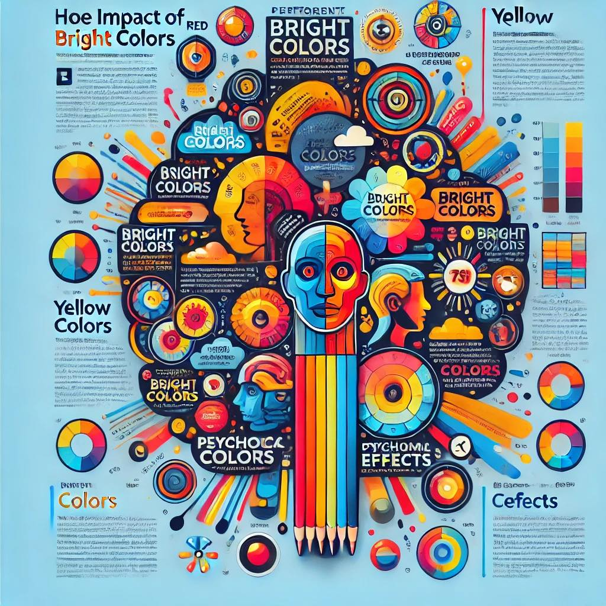
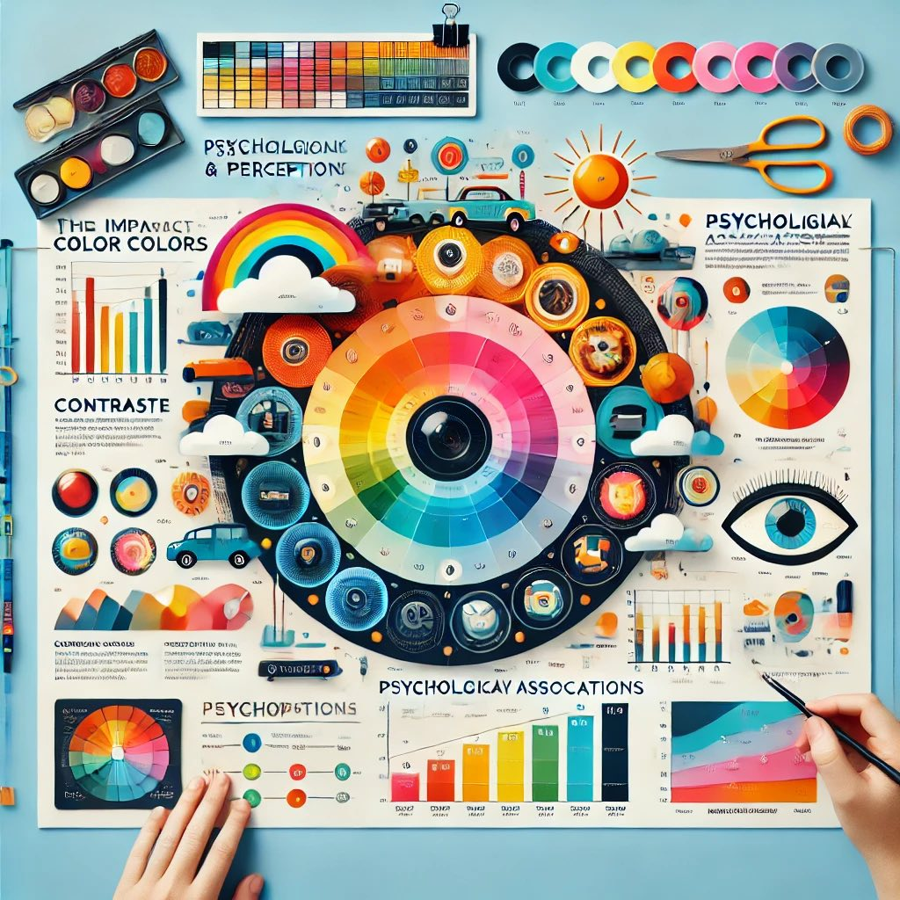
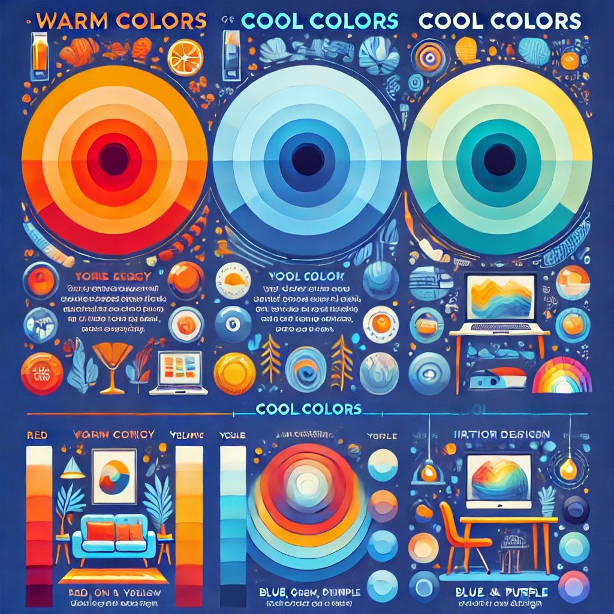
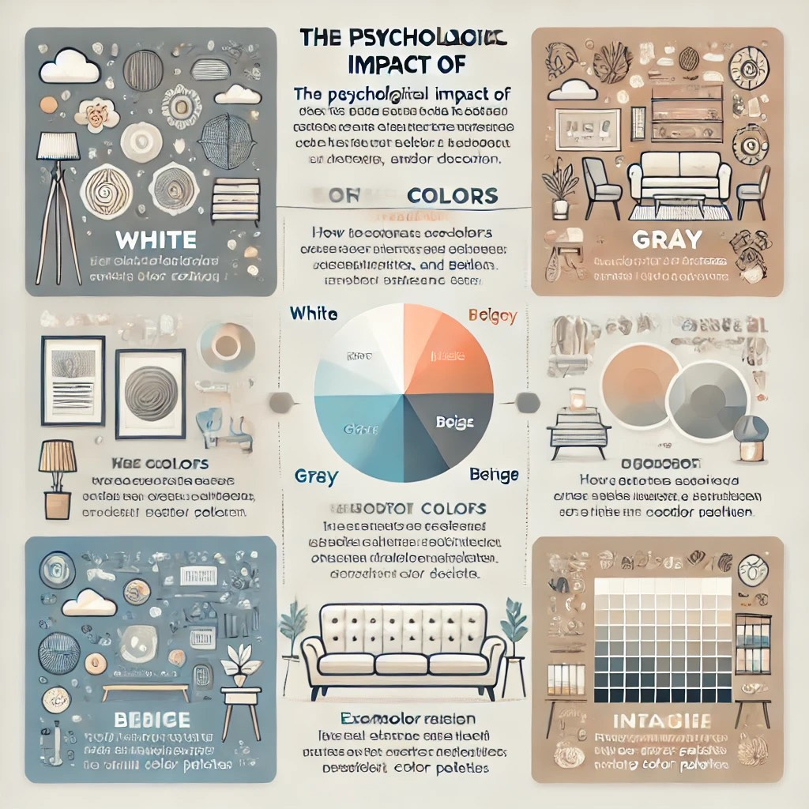

Как да използваме цветовете ефективно?
Цветовете имат огромно влияние върху възприятието, емоциите и решенията на потребителите. Ето някои от най-добрите практики при избора и комбинирането на цветове:
1. Избягвайте прекалено много ярки цветове
Ярките цветове могат да привлекат вниманието, но прекомерната им употреба може да бъде натоварваща за окото. Комбинирайте ги с неутрални тонове.
2. Контрастът подобрява четимостта
Високият контраст между фона и текста гарантира, че съдържанието е лесно за четене.
3. Използвайте цветова психология
Различните цветове предизвикват различни емоции. Избирайте цветовете според целевата аудитория и посланието, което искате да предадете.
4. Хармонични цветови комбинации
Използвайте цветови схеми като допълнителни, аналогични или различни комбинации, за да създадете визуално балансиран дизайн.
